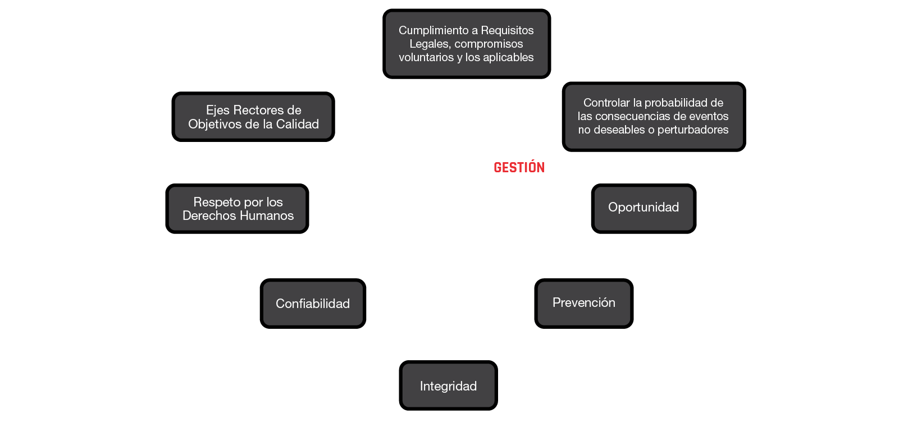
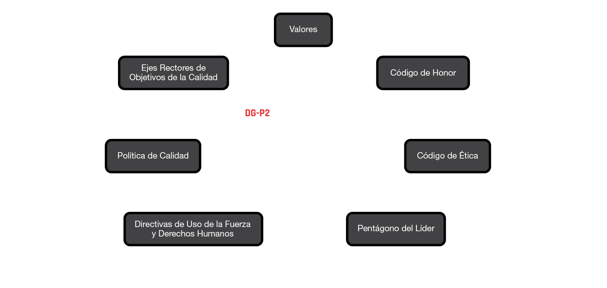

Declaración de Conformidad – BLACK Operadores de Seguridad Privada, Declara la conformidad con el Sistema de Gestión de las Operaciones de Seguridad - SGOS a través del compromiso de cada uno de sus colaboradores, contratistas, subcontratistas y proveedores que hacen parte activa de nuestra cadena de suministro implementando los principios y compromisos de acuerdo con:
La declaración de conformidad estipula las expectativas en cuanto a los derechos humanos de las partes interesadas de la organización vinculadas directamente a nuestras operaciones.
Se tratará a todas las personas, y se requerirá de su personal que trate a todas las personas, con humanidad y con respeto a su dignidad y a su vida privada.
Se adoptarán las normas para el uso de la fuerza de conformidad con el derecho aplicable y los requisitos mínimos que figuran en la sección sobre el empleo de la fuerza en el ICoC, y se acuerda adoptar dichas normas con el cliente.
Se exigirá a todo el personal que adopte todas las medidas necesarias para evitar el uso de la fuerza. Si fuera necesario, se hará de conformidad con la ley aplicable, sin exceder lo estrictamente necesario y de forma proporcional a la amenaza y a la situación concreta. El personal solo utilizará armas de fuego contra personas en defensa propia, defensa de terceros frente a amenaza de muerte o lesiones graves inminentes, o para prevenir un delito especialmente grave que implique peligro para la vida.
Se requerirá al personal tratar con humanidad a todas las personas aprehendidas y de acuerdo con su condición y nivel de protección en virtud de las normas de derechos humanos o el derecho humanitario internacional aplicable, incluyendo la prohibición de la tortura y otros tratos o penas crueles, inhumanos o degradantes.
El personal no tomará o aprehenderá a ninguna persona salvo para defenderse a sí mismo o a otros contra amenaza inminente de violencia, o como consecuencia de un ataque o delito cometido contra personal de la empresa, clientes o bienes a su cargo, en espera de su entrega a la autoridad competente a la mayor brevedad. La aprehensión se llevará a cabo conforme a las leyes vigentes y el cliente será notificado sin demora.
Se requerirá a todo el personal que trate con humanidad, a todas las personas aprehendidas de acuerdo con su condición personal y nivel de protección, y conforme a las normas de derechos humanos o el derecho humanitario internacional aplicable, incluyendo en particular la prohibición de la tortura u otros tratos o penas crueles, inhumanos o degradantes.
Se requerirá que el personal no participe en actos de tortura ni en tratos o penas crueles, inhumanos o degradantes.
Se denunciará, y se requerirá de nuestros empleados y otras personas quienes realicen labores en nombre de la organización denuncien, todo acto de tortura u otros tratos o penas crueles, inhumanas o degradantes que estuvieran en su conocimiento, o de cuya existencia tuvieran una sospecha razonable. Estas denuncias serán presentadas ante el cliente y ante uno o más de los siguientes: las autoridades competentes del país donde sucedieron los hechos, el país de nacionalidad de la víctima, o el país de nacionalidad del autor.
No se beneficiará, ni permitirá que su personal participe o se beneficie de la explotación sexual (incluyendo, a estos efectos, la prostitución) y el abuso, violencia o delitos de género, ya sea dentro de la empresa o públicamente, incluyendo la violación, el acoso sexual, o cualquier otra forma de abuso o violencia sexual.
No se participará en la trata de seres humanos y requerirán de su personal que no participe en la trata de seres humanos. A los efectos del ICOC, la trata de seres humanos es la captación, acogida, transporte, entrega u obtención de una persona para (1) un acto de comercio sexual inducido por la fuerza, el fraude o la coerción, o en el que la persona obligada a realizar dicho acto no haya cumplido los 18 años de edad; o (2) los trabajos o servicios o, a través del uso de la fuerza, el fraude o la coerción, con el propósito de someter a la persona a servidumbre involuntaria, a servidumbre por deudas o a la esclavitud.
No se utilizarán la esclavitud, el trabajo forzoso u obligatorio ni serán cómplices de cualquier otra entidad que haga uso de este tipo de trabajo.
Se respetará los derechos de los niños (toda persona menor de 18 años) que han de ser protegidos de las peores formas de trabajo infantil, incluyendo:
No se discriminará en la contratación del personal, y se requerirá a su personal que no discrimine en la contratación del personal, por motivos de raza, color, sexo, religión, origen social, condición social, condición indígena, discapacidad u orientación sexual, y se seleccionará al personal en base a las cualificaciones exigidas por el contrato.
En la medida en que lo permitan las exigencias en materia de seguridad y la propia seguridad de la población civil, su personal y los clientes:
BLACK OPERADORES DE SEGURIDAD PRIVADA acuerda actuar de conformidad con los principios contenidos en el Código ICoC, según lo siguiente:
Nuestra declaración tiene como objetivo garantizar el respeto por los derechos humanos y el uso adecuado de la fuerza, así como prevenir hechos y situaciones que atenten contra la dignidad humana mediante acciones tales como:
La presente declaración busca demostrar el compromiso y la conformidad de BLACK OPERADORES DE SEGURIDAD PRIVADA para respetar los derechos humanos y estipular las expectativas de las partes interesadas vinculadas directamente a las operaciones de la organización.
BLACK OPERADORES DE SEGURIDAD PRIVADA, empresa de excelencia especializada en servicios de seguridad privada para la protección de bienes muebles e inmuebles de los clientes, atendiendo los requerimientos de este, por medio de procesos con alto valor agregado y personal idóneo quienes tienen definidos sus roles, responsabilidades y autoridad por medio las descripciones funcionales del cargo. Se cuenta con una red de contratistas, subcontratistas y proveedores de bienes y servicios comprometidos con el Sistema de Gestión de las Operaciones de Seguridad (SGOS) haciendo parte activa de nuestra cadena de suministro.
En Black Operadores de Seguridad Privada, nos comprometemos a:
Considerando los siguientes ejes rectores en la operación de todos nuestros Procesos de Gestión:
En Black Operadores de Seguridad Privada, es fundamental garantizar el control y el cumplimiento de todas las normas establecidas en el código de ética de la organización. Por tal razón se anima a las personas que trabajan en nombre de la organización, quienes tengan la creencia razonable de que se ha producido una no conformidad con el SIG, preocupaciones acerca de conductas no éticas, violaciones o potenciales violaciones a los Derechos Humanos, malas prácticas y/o actos inapropiados contra cualquier parte interesada, que reporten la inconformidad de modo anónimo en el ámbito interno utilizando la herramienta habilitada en la página web https://www.blackoperadores.com/, así como externamente a las autoridades correspondientes. Nos comprometemos a:
Acerca de hechos relacionados con situaciones anormales, violaciones de ley, violaciones a los Derechos Humanos y situaciones de emergencias en los servicios; con apego a las directrices estratégicas:
| Actividad | Nombre | Cargo | Firma |
|---|---|---|---|
| Elaborado por: | Iván Casimiro Morales | Coordinador del SGOS | |
| Revisado por: | Claudia Camacho Navarrete | Gerente Jurídico | |
| Autorizado por: | José Manuel Sigler Arbeloa | Director General |
| Versión | Fecha | Sección cambiada | Cambio realizado | Vigencia |
|---|---|---|---|---|
| 00 | 23/10/2023 | N/A | Creación del documento | 3 años |
| 01 | 19/09/2025 | I a XI | Actualización general | 3 años |
Establecer un procedimiento estandarizado para gestionar el incumplimiento, quejas o reclamos de las políticas internas de la organización o no conformidad a los lineamientos del Sistema de Gestión de las Operaciones de Seguridad (SGOS) de BLACK OPERADORES DE SEGURIDAD PRIVADA (BOSP).
El presente procedimiento aplica para todas las áreas de BOSP.
Los documentos citados a continuación son indispensables para la aplicación de este documento. Para las referencias sin fecha se aplica la última versión del documento de referencia (incluyendo cualquier modificación).
| # | Documento | Código |
|---|---|---|
| 1 | ISO 18788:2015 Sistema de Gestión para Operaciones de Seguridad Privada | N/A |
| 2 | Manual del Sistema de Gestión de las Operaciones de Seguridad | DG-MSGOS |
| 3 | Procedimiento para Elaboración de Documentos del Sistema de Gestión | DG-PSA-1 |
Acción Correctiva: Es la acción tomada para eliminar la causa de una no conformidad, queja o reclamo.
Considerar que puede haber más de una causa de no conformidad, queja o reclamo. La acción correctiva, se toma para prevenir que algo vuelva a producirse.
La causa(s) de una no conformidad, se debe identificar aplicando metodologías establecidas.
Cliente: Figura con la que se ha fijado una relación comercial para proveer servicios de seguridad privada. Esta figura puede estar representada por un rol directivo o corporativo, así como por el contacto con el que se tiene comunicación directa e inmediata en cada sitio de servicio.
Corrección o Contención: Es la acción que puede o no, ser inmediata y que se aplica para eliminar una no conformidad, queja o reclamo.
Todo el personal de Black puede aplicar correcciones considerando un análisis rápido que permita justificar que a partir de su aplicación se evita la propagación del incumplimiento, o mayor afectación al cliente o a la parte interesada.
La corrección efectuada por el personal operativo debe documentarse en el SGOS.
No Conformidad: Incumplimiento de un requisito.
Parte interesada: Persona u organización que puede afectar, verse afectada o percibirse como afectada por una decisión o actividad de BOSP.
El concepto de partes interesadas se extiende más allá del enfoque únicamente al cliente, incluye partes interesadas internas o dentro de la estructura de BOSP y partes interesadas externas.
Plan de Acciones Correctivas: Es un cronograma que indica, las actividades, responsables, recursos y fechas programadas, establecidas para eliminar la causa de una no conformidad.
Proceso: Conjunto de actividades mutuamente relacionadas que utilizan las entradas para proporcionar un resultado previsto.
Queja: Situación emitida por el Cliente u otra parte interesada, que se relaciona con incumplimiento a sus requisitos (acordados con Black), la cual requiere de una respuesta.
Reclamo: Situación emitida por el Cliente u otra Parte Interesada de BOSP, la cual requiere de una respuesta que implique una compensación que puede ser cualitativa o cuantitativa conforme a los derechos que se expongan como violados.
Requisito de Normas ISO: Todos los establecidos en los capítulos 4 a 10 de las normas ISO de referencia y que deben cumplirse a través del SGOS de BOSP.
Requisito del SGOS: Todos los establecidos por Black en la estructura documental del Sistema de Gestión, necesarios para cumplir con sus propósitos.
Requisito Legal: Todos los establecidos en el marco jurídico legal aplicable a las operaciones de BOSP.
Retroalimentación del Cliente o de la Parte Interesada: Toda información emitida por el Cliente u otra parte interesada, la cual requiere de una atención por parte de BOSP. Para efectos del SGOS de BOSP este tipo de situaciones se registran como NOTIFICACIONES y se le asignará un folio consecutivo.
Sistema de Gestión: Conjunto de elementos de una organización interrelacionados o que interactúan para establecer políticas, objetivos y procesos para lograr estos objetivos.
1. Dirección General
| Responsabilidad | Autoridad |
|---|---|
| Atiende las no conformidades relacionadas con los procedimientos que forman parte del Proceso de Dirección General. | -- |
| En caso de ser necesario, participa en la atención a quejas o reclamos del Cliente. | Autoriza la liberación de recursos económicos para la implementación del Plan de Acciones Correctivas o en su caso, propone cambios a las acciones para minimizar los gastos. |
| Revisa el Plan de Acciones Correctivas. | -- |
| Revisa en el estado de atención a no conformidades, quejas y reclamos que se registren en el SGOS. | -- |
2. Líderes de Procesos
| Responsabilidad | Autoridad |
|---|---|
| Establecen correcciones para atender una no conformidad o quejas o reclamo relacionados con los procedimientos que forman parte de su Proceso. | -- |
| En caso de que el personal a su cargo establezca las correcciones, puede dar visto bueno de la corrección propuesta. | -- |
| Participan en el análisis de causa raíz conforme se requiera para identificar la causa raíz de la no conformidad, o queja o reclamo. | Firma de visto bueno el Plan de Acciones Correctivas y lo envía a la Dirección General para su autorización. |
| Reporta al Coordinador del SGOS, el estatus de la atención a no conformidad, o queja o reclamo. | -- |
3. Todo el personal de BOSP
| Responsabilidad | Autoridad |
|---|---|
| Puede recibir la retroalimentación del cliente, debiendo reportarla a su jefe inmediato conforme a la línea de mando. | -- |
| Con fundamento en sus derechos y obligaciones, puede emitir quejas o reclamos y solicitar atención. | -- |
| Conforme sea factible de acuerdo con la operación, los operadores de seguridad pueden participar en investigación, de la metodología para identificar la causa raíz; en | -- |
| Responsabilidad | Autoridad |
|---|---|
| caso contrario la recopilación de datos será a través del Operador Móvil. | |
| El personal administrativo, debe participar en la aplicación de metodología para identificar causa raíz. | -- |
| Cuando sea requerido por su jefe inmediato, aplica correcciones o acciones inmediatas de contención en caso de que la naturaleza de la situación lo permita, reporta a jefe inmediato y solicita visto bueno de la corrección propuesta. | -- |
| Responsabilidad | Autoridad |
|---|---|
| Da seguimiento a la atención de no conformidades, quejas y reclamos y lo prepara para el evento de Revisión por la Dirección. | Cuando se tenga un desfase de más del 30% de actividades y tiempo establecido en un Plan de Acciones Correctivas; tiene la facultad de emitir una llamada de atención de forma escrita al responsable asignado y solicitar justificación escrita de la desviación. |
| Responsabilidad | Autoridad |
|---|---|
| Reciben retroalimentación del cliente u otra parte interesada. | Aplica correcciones o medidas de contención para resolver la situación y evitar la propagación de los efectos de la situación o riesgo que está implicado en la situación que manifiesta el cliente u otra parte interesada. |
| Hacen un análisis rápido para identificar si se trata de un incumplimiento a consignas, queja o reclamo de cliente. |
VII. DESARROLLO
A. Identificación, registro y atención a no conformidad del sistema de gestión.
Las fuentes para identificar no conformidad potencial y real al SIG de Black o violaciones a las leyes internacionales, nacionales y locales o los derechos humanos sin ser limitativo pueden ser:
Black se compromete a investigar las quejas y reclamos de manera rápida e imparcialmente, con debida consideración a la confidencialidad y las restricciones impuestas por la ley local.
Las verificaciones a cumplimiento a consignas generales y específicas que realiza el Operador Móvil, y, por otro lado, las testificaciones que realiza Gerencia de Operaciones y Coordinador de Operaciones Móviles a los Operadores Móviles son registradas en las Listas de Verificación correspondientes y en caso de detectar desviaciones, se registra en el Reporte Único de Incidencias (RUI) y conforme a la naturaleza se procede a la aplicación del Procedimiento de Disciplina Progresiva.
La no conformidad, se registra en la Base de Datos de No Conformidades, asignando número de folio que se estructura como sigue:
Siglas NC-número consecutivo y fecha en formato día-mes-año. Por ejemplo: NC-1-02-05-2025.
Posteriormente en el formato Registro de Atención a No Conformidad, nuevamente se registra la no conformidad; en caso de corrección se documenta.
El criterio para atender una no conformidad sólo con corrección, será:
En todos los demás casos, se debe aplicar la metodología de diagrama de pescado o Ishikawa para identificar la causa raíz, utilizando el formato Análisis de Causa Raíz y establecer el Plan de Acciones Correctivas que impacten en la causa identificada.
La causa identificada y el plan de acción se documenta en el Registro de Atención a No Conformidad.
VIII. DIAGRAMA DEL PROCEDIMIENTO
Dejar una hoja en blanco para incluirlo.
IX. LISTA DE FORMATOS APLICABLES
| # | Formato | Código |
|---|---|---|
| 1 | Base de Datos de No Conformidad | DG-PSA-4-F1 |
| 2 | Registro de Atención a No Conformidad | DG-PSA-4-F2 |
| 3 | Análisis de Causa Raíz con Diagrama de Pescado | DG-PSA-4-F3 |
| 4 | Reporte de Necesidad o Expectativa | DG-PSA-4-F4 |
| 5 | Base de Datos de Notificación, Queja o Reclamo | DG-PSA-4-F5 |
X. CONTROL DE REGISTROS
| # | Registro | Responsable | Lugar de resguardo | Tiempo de resguardo | Disposición final |
|---|---|---|---|---|---|
| 1 | Base de Datos de No Conformidad | Coordinador SGOS | Electrónico | 7 años | Destrucción |
| 2 | Registro de Atención a No Conformidad | Líder de Proceso | Electrónico | 7 años | Destrucción |
| 3 | Análisis de Causa Raíz con Diagrama de Pescado | Líder de Proceso | Electrónico | 7 años | Destrucción |
| 4 | Reporte de Necesidad o Expectativa | Empleados BOSP | Electrónico | 7 años | Destrucción |
| 5 | Base de Datos de Notificación, Queja o Reclamo | Coordinador SGOS | Electrónico | 7 años | Destrucción |
XI. ANEXOS
No existen anexos para el presente documento.
En BLACK OPERADORES DE SEGURIDAD PRIVADA S.A. DE C.V. sabemos de la necesidad e importancia que implica proteger los datos de nuestro personal y visitantes, es por ello que aplicamos lineamientos, políticas, procedimientos y programas de privacidad para proteger la información que sea recabada.
Como cliente o empleado de BLACK OPERADORES DE SEGURIDAD PRIVADA S.A. DE C.V. usted tiene la seguridad de que sus datos personales y empresariales estarán protegidos adecuadamente. La seguridad de su información como parte de nuestro objeto social, es nuestro principal objetivo; por ello la protegemos mediante el uso exclusivo con la finalidad para la cual fue recabada y el mantenimiento y resguardo de la información, a fin de impedir que terceros no autorizados accedan a la misma.
Como es de su conocimiento el pasado 5 de julio de 2010 se publicó en el Diario Oficial de la Federación la Ley Federal de Protección de Datos Personales en Posesión de Particulares (en lo sucesivo la “Ley”) cuyas disposiciones claramente coinciden con nuestro objetivo de proteger sus datos personales. Para su mayor comodidad el contenido de la Ley puede ser consultado a través de los portales que el Gobierno Federal, por conducto de la Secretaría de Gobernación, y la Cámara de Diputados del H. Congreso de la Unión tienen en Internet y cuyas direcciones son: http://www.ordenjuridico.gob.mx y http://www.diputados.gob.mx.
Por lo anteriormente mencionado, en cumplimiento a nuestro Programa de Privacidad y con fundamento en lo dispuesto por la Norma aplicable; se hace de su conocimiento que los datos personales y empresariales que se obtengan por parte de BLACK OPERADORES DE SEGURIDAD PRIVADA S.A. DE C.V. serán tratados de manera confidencial a través de los sistemas y esquemas provistos para tales efectos.
Responsables del tratamiento de sus datos personales:
En este tenor se menciona que el responsable del tratamiento de sus datos personales será BLACK OPERADORES DE SEGURIDAD PRIVADA S.A. DE C.V. por conducto del Área de Recursos Humanos entre otras áreas que por su contacto deban tener acceso a dicha información.
En cumplimiento a lo establecido en la Ley antes referida y para efectos del presente aviso de privacidad. señala como su domicilio comercial el ubicado en la calle Presa Valsequillo 24, Col. Irrigación, Alcaldía Miguel Hidalgo, C.P. 11500, Ciudad de México.
Datos personales y empresariales que pueden recabarse:
Queda entendido entre las partes que BLACK OPERADORES DE SEGURIDAD PRIVADA S.A. DE C.V. podrá recabar los datos personales y empresariales necesarios para atender cuestiones que deban ser inherentes a la prestación de los servicios contratados y la relación comercial establecida; formalizar la contratación de nuestros servicios para el caso de ser prospecto a cliente; y para la adquisición o prestación de cualquier tipo de producto o servicio que se produzca para el caso de ser proveedor; al momento de aplicar a una vacante e iniciar el proceso de reclutamiento. De este modo de manera enunciativa, más no limitativa, BLACK OPERADORES DE SEGURIDAD PRIVADA S.A. DE C.V. podrá recabar su nombre; domicilio; fecha de nacimiento; país y entidad de nacimiento; nacionalidad; ocupación, profesión, actividad o giro del negocio al que se dedique, actas constitutivas, poderes, domicilio fiscal, convencional; números telefónicos fijos o celulares; correos electrónicos, Clave Única de Registro de Población (CURP); Clave del Registro Federal de Contribuyentes e información financiera relacionada con la capacidad financiera para ser proveedor o cliente de BLACK OPERADORES DE SEGURIDAD PRIVADA S.A. DE C.V.
Finalidades del tratamiento de sus datos personales:
Los datos personales y empresariales que recabe serán usados para la formalización del contrato de prestación de servicios para el caso de ser cliente de y la formalización de la compra, adquisición, operación y registro de los productos o servicios que el proveedor venda, produzca o comercialice en favor de BLACK OPERADORES DE SEGURIDAD PRIVADA S.A. DE C.V. Los datos personales que se recaben con fines de reclutamiento al momento de aplicar para una vacante laboral.
Transferencia de datos personales:
BLACK OPERADORES DE SEGURIDAD PRIVADA S.A. DE C.V. podrá transferir únicamente sus datos personales y empresariales a las autoridades competentes que así lo requieran y con motivo de sus atribuciones y de conformidad con el objeto social.
Revocación del consentimiento:
Usted podrá revocar su consentimiento, así como oponerse para el tratamiento de sus datos personales y empresariales para las finalidades que no son indispensables para la relación jurídica que dio origen a la contratación como empleado, cliente o prestador de servicios.
Derechos ARCO:
Usted o su representante legal debidamente acreditado podrán limitar el uso o divulgación de sus datos personales y empresariales; así como ejercer, cuando procedan, los derechos de Acceso, Rectificación, Cancelación u Oposición que la Ley prevé. Es importante mencionar que el ejercicio de cualquiera de dichos derechos no es requisito previo ni impide el ejercicio de otro derecho.
Usted tiene el derecho de acceder a los Datos Personales que poseemos de usted y al detalle del tratamiento de los mismos; a ratificarlos en caso de ser inexactos o incompletos; a cancelarlos cuando considere que no se requieren para alguna de las finalidades señaladas en el presente AVISO DE PRIVACIDAD, estén siendo utilizados para actividades no consentidas, o haya finalizado la relación contractual o de servicio, y a oponerse del tratamiento de las mismos los mecanismos implementados para el ejercicio de los derechos ARCO en los términos que marca la ley en su artículo 29, a través del envió de un a solicitud al correo juridico@blackoperadores.com, los siguientes derechos: acceso, ratificación, cancelación u oposición deberá contener y acompañar lo siguiente: (i) nombre del titular, domicilio, cuenta de correo u otro medio para comunicarle la respuesta de su solicitud, (ii) documento que acredite su identidad, (iii) la descripción clara y precisa de los datos personales respecto de los que busca ejercer algún derecho de los antes mencionados, y (iv) cualquier otro documento que facilite la localización de los datos personales. En un plazo máximo de 20 días hábiles atenderemos su petición.
Así también, le informamos que usted tiene derecho a iniciar un Procedimiento de Protección de Datos ante el Instituto Federal de Acceso a la Información y Protección de Datos (www.ifai.gob.mx) a partir de que concluya el plazo de 20 días contados a partir de la fecha de recepción de su solicitud de ejercicio de derechos.
Modificaciones al aviso de privacidad:
Cualquier modificación al presente aviso le será notificada a través de cualquiera de los siguientes medios: un comunicado por escrito enviado a su domicilio; a través de la página web, un mensaje enviado a su correo electrónico o bien, a través de mensajes publicados en periódicos de amplia circulación.